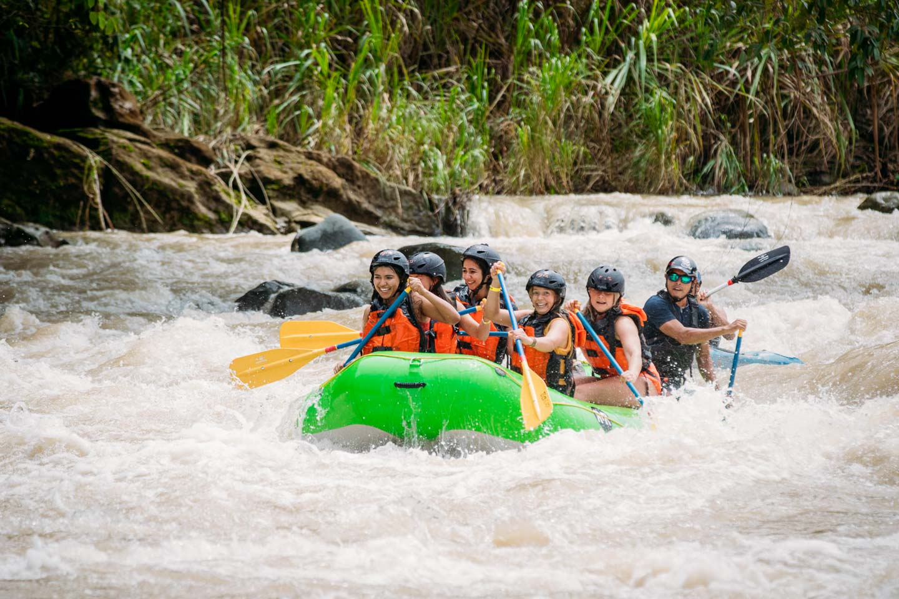
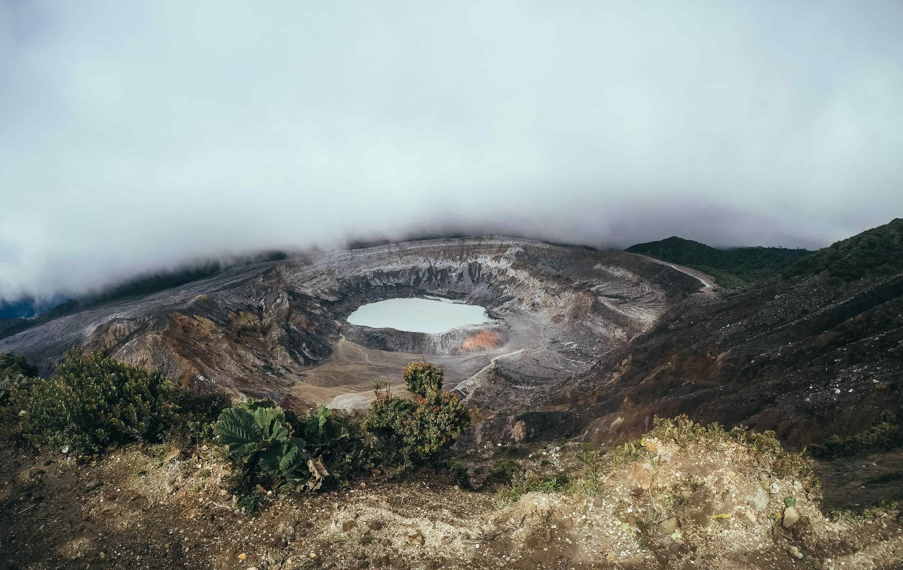
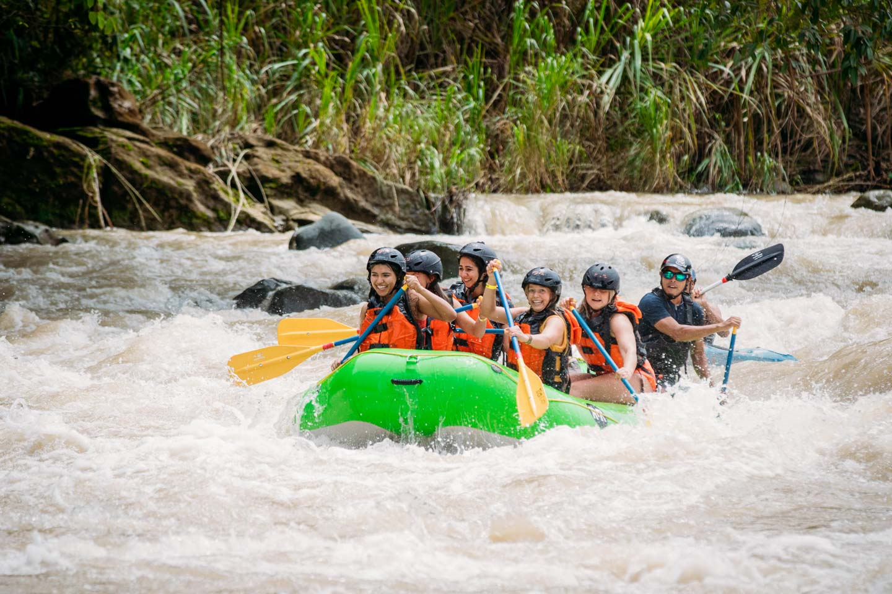
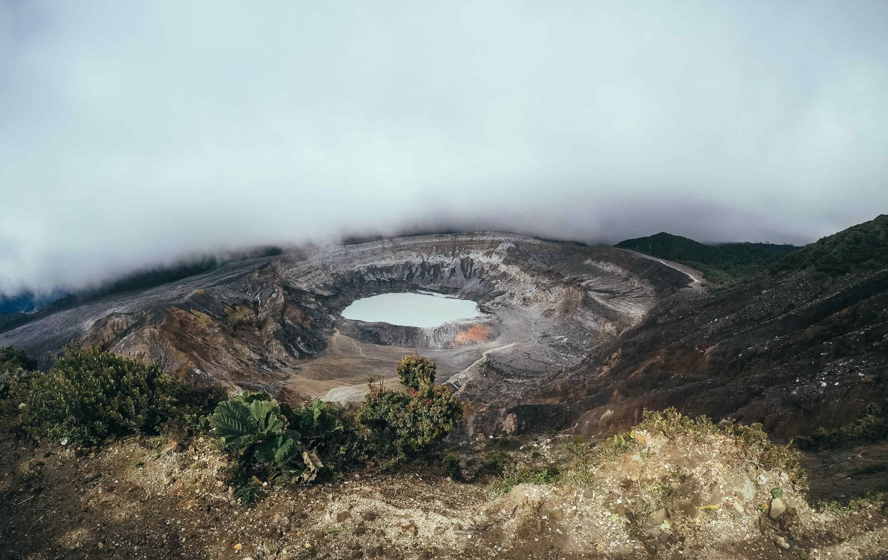
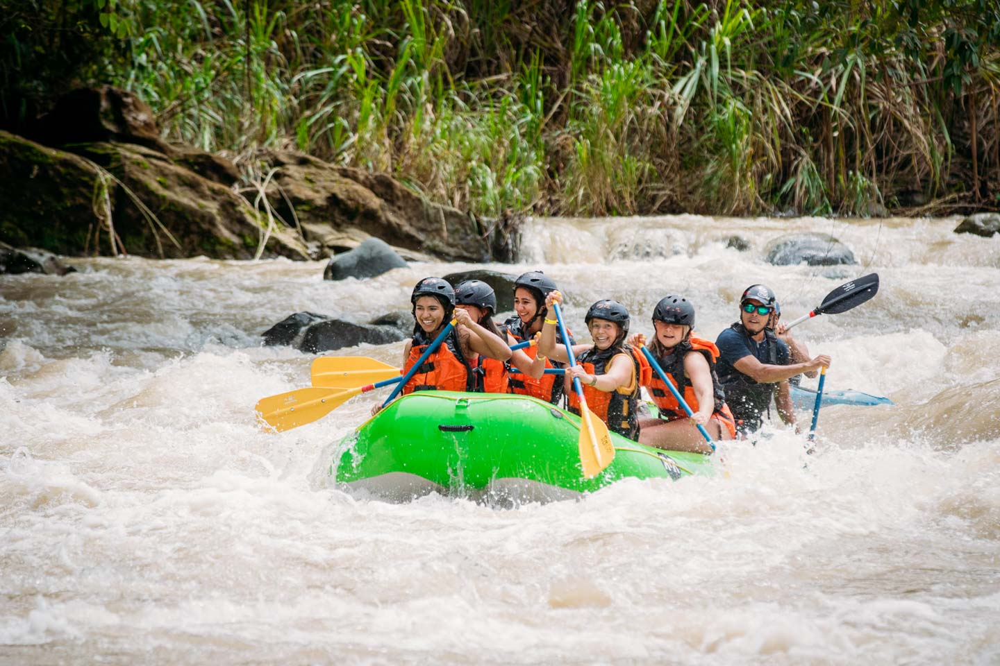
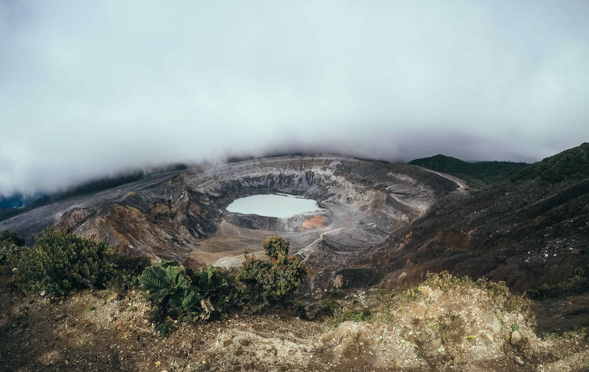
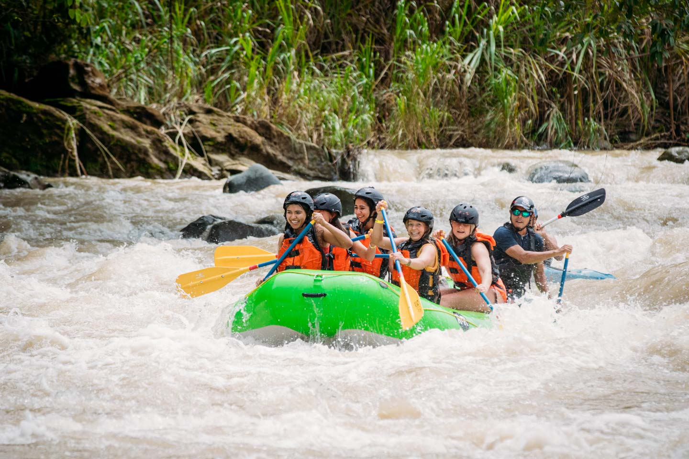
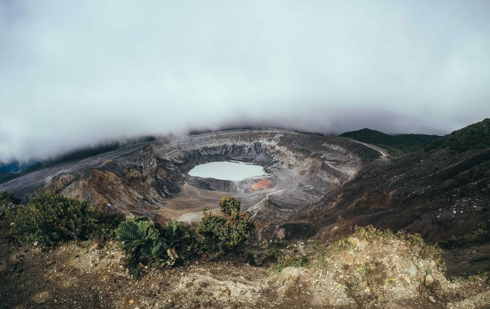

Unas vacaciones en Costa Rica es algo para todos. Es un viaje increíble en un país increíble, aquí encontraras lugares para embarcarte en una aventura que no olvidaras marcada por mucha adrenalida y diversión con actividades al aire libre y paisajes urbanos. Sin importar donde vayas no podras huir de la belleza natural de este hermoso país Costa Rica.